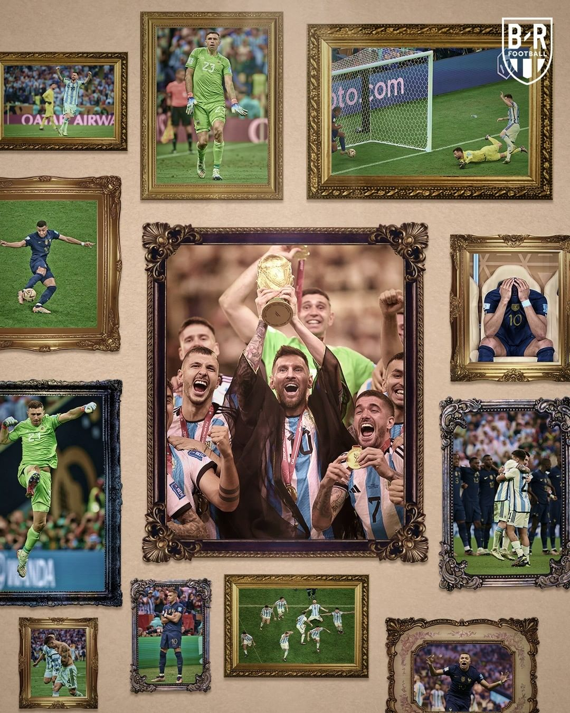
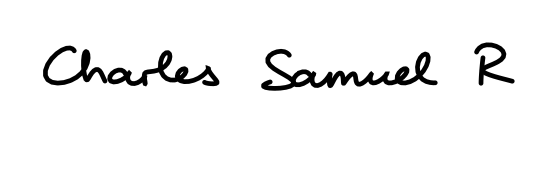

My closing thoughts

This is probably the 2nd World Cup that I am properly covering. In 2014, since most matches were early in the morning I was just watching highlights at that time. I did all my posts in a notebook I set aside for 2018 actually and now I have evolved to these sites. Not a bad way to show your work isn’t it? 😂. Anyways, let’s get into this World Cup as a whole.
From off the field and in a footballing sense, this World Cup was just poorly timed and completely corrupt. I think however the final we just had completely made up for the lack of proper football in a way. We had it in the winter which is unheard of because it is usually a summer tournament but because of the country and its adverse climate we had to have it in the winter slap bang in the middle of the club season which lead to fixtures being cramped up and hardly any gap to breathe for people who watched club football. Injuries left right and center to so many key players due to the fixture congestion but on the field conditioning was a real issue for a load of teams. Despite that, there were so many upsets to talk about. Japan stood firm to beat Germany. The crazy group they were in on the final matchday was the stuff of absolute dreams. There was legit a moment where both Spain and Germany were going out and it lasted around 3 minutes. Morocco defied expectations and pushed hard all the way to 4th place. Belgium and England underperformed due to the “favorites” mania 🙄 and lack of proper mentality to fight like Croatia who gave a brilliant account of themselves by finishing 3rd after losing Mandzukic to the coaching staff. Brazil’s dance team gave us false hope after thrashing South Korea in the Round of 16 and then going on to lose on penalties. Chin up, guys, at least you made sure Argentina didn’t do the same mistake when they went to penalties against Netherlands and France 😂😂. England should have gone through but their lack of difference makers really held them back, especially against France. There were loads of stories everywhere. The unholy amount of injury time added to prevent time-wasting was actually a two-edged sword because while it exhausted players more than normal, it provided us with the big moments. Iran getting 2 quickfire goals against Wales. Netherlands pulling level after a smart freekick. I am mostly neutral about it for now and I am glad the leagues aren’t adopting it yet. The crazy end to Portugal’s group where Korea got a dramatic winner against Portugal and Ghana pulled Uruguay down with them 😂. All in all, I think this amazing final made up for the lack of proper football that was played overall. I am not taking anything away from the achievements that many people did but in a pure football sense it just wasn’t a good watch apart from the final 😂. How could anybody forget when Saudi Arabia bested Argentina and people were immediately on their case for not living up to the favorites tag? Well, the person that went viral for saying “Where’s Messi?” has become an Argentina fan so I guess it all worked out in the end as Argentina and France played out the final of the century and it ended with Messi finally winning the trophy which he came so close to winning all the way back in 2014 and putting him in a category all on his own. He has effectively completed football.
A little note to the people who read these posts
I started doing this all the way back before the 2014 World Cup when I ripped the covers off an old rough notebook and joined a few together to write the scorers and then it moved to write about matches a little bit and then sticking newspaper snippets into the same notebook. It got pushed to 2 notebooks which were later bound properly. It evolved to the 2018 World Cup where I set aside a separate and got more in-depth with my writing and still stuck with the newspaper clipping of the match always all the way till the final. The sites began when the Euros and Copa America came around at the same time when I learned about using Hugo(The server which is used) and Joplin(Where I write all my notes) to create a site and I started doing it for those 2 tournaments which you can find here:
Once this World Cup was planned and the dates were set I immediately got to thinking about taking my posts to the next level and that is what you see currently. When you see the 2 sites I have above you will realize how much I have changed things and how I have become way more in-depth than ever before. I hope you loved all of these notes which reported the score and also had a bit of a personal touch at the end of this great journey.
To all of those who read these to hear my take and the people who read these as their primary source of news:

This is Charles Samuel R signing off after a rather great World Cup 👋👋
|  |
|---|